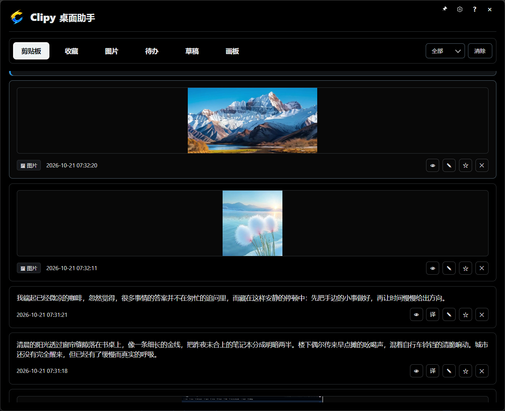

文字图片，都能留下
自动记录复制的文字和图片，支持预览与再次粘贴，减少反复寻找原内容。
你的 Windows 随手工作台
文字、图片、临时想到的事，都有地方放。
从剪贴板到待办、草稿和画板，让手边的工作更顺手。
用 Alt+V 随时唤出，继续手边的事。

复制过的文字和图片，放在一起，随时查找。
少一点来回切换
随手复制，随手记下。
需要的时候，很快就能找到。
自动记录复制的文字和图片，支持预览与再次粘贴，减少反复寻找原内容。
搜索内容或记录名称，收藏经常用到的信息，把常用素材留在手边。
多渠道翻译与目标语言选择。选中一条文字，按 T 即可进入翻译预览。
记下临时任务，添加标签和子步骤；用草稿留下文字与粘贴的图片。
画流程、理关系、写几笔想法。画板自动保存，也能复制为图片继续使用。
一份文件导出记录、图片和随手内容，在另一台电脑合并导入，保留已有数据。
很快就能上手
启动 Clipy，复制一段文字或一张图片。
唤出窗口，查看或搜索复制过的内容。
快速粘贴，也可以收藏、翻译或继续整理。
本地优先，让内容留在自己手里。记录与随手内容保存在本机；使用在线翻译时，所选文本会发送至对应翻译服务。
v1.0.0 免费公测中，欢迎试用，也欢迎把建议告诉我。
适用于 Windows x64 · 点击下载将从 GitHub 获取安装包。如下载未开始，可前往版本页面手动下载。